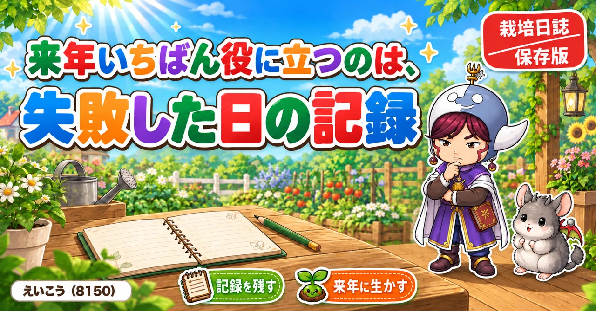
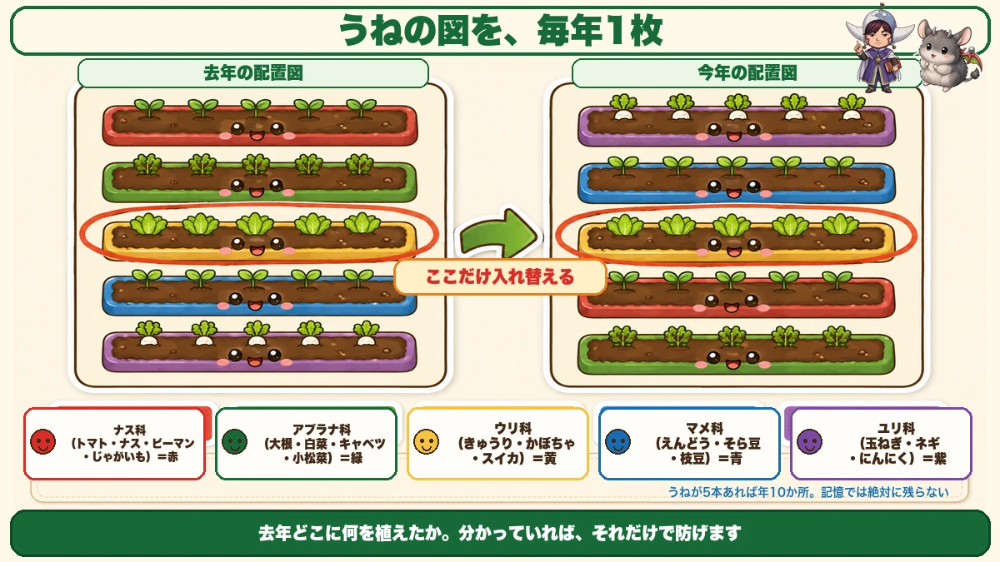
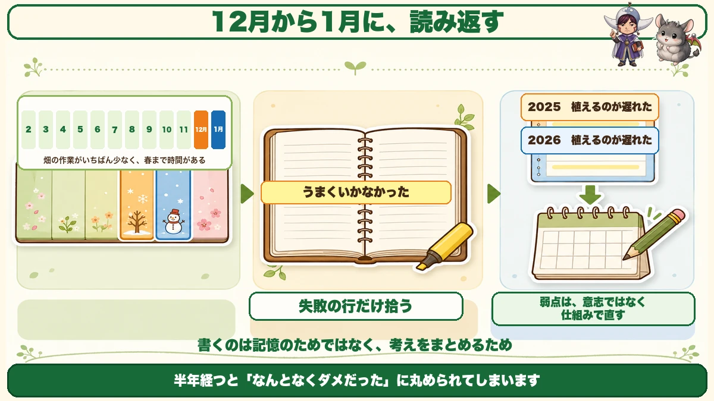

栽培日誌のつけ方｜何を書くか・うねの配置図・失敗を翌年に生かす読み返し方

どうも、8150（えいこう）です🌱 家庭菜園歴8年、理科の教員免許を持っていて、有機・無農薬で野菜を育てています。
9月10日 Bのうね
- 作業：大根の種をまく。品種は種袋の写真あり。1か所に4粒。
- 起きたこと：とくになし。
- 推測：なし。
9月14日 Bのうね
- 作業：なし。
- 起きたこと：芽が出そろう。端の2か所だけ出ていない。
- 推測：端は水が乾きやすいのかもしれない。
9月25日 Bのうね
- 作業：1回目の間引き。1か所2本に。
- 起きたこと：葉に小さな穴がいくつか。
- 推測：虫かもしれない。防虫ネットを早めにかければよかったかも。→来年確かめる
10月20日 Bのうね
- 作業：2回目の間引き。1か所1本に。追肥。
- 起きたこと：葉の色がこい。元気そう。
- 推測：なし。
12月5日 Bのうね
- 作業：収穫を始める。
- 起きたこと：何本か、根が二股に分かれていた。
- 推測：土の中に石や、かたまりがあったのかもしれない。耕し方が浅かったのかも。→来年は深く耕して比べる
こんなふうに、1回の書きこみは数行で十分です。「→来年確かめる」と書いておくと、冬に読み返したときに、見るべきところがすぐ分かりますよ。
2. 記録しておくと翌年に効く項目
全部を書く必要はありません。自分に必要なものだけ選んでくださいね。
作物について
- 作物の名前と品種（品種名は種袋や苗の札に書いてあります）
- 種をまいた日、苗を植えた日
- 苗を買ったお店（どこで買うかで、苗の状態が変わることがあります）
- 芽が出た日
土と肥料について
- 入れた肥料の種類と量
- 堆肥や腐葉土を入れた日
- 石灰を入れた日と量
管理について
- 水やりの様子（毎日やったか、雨まかせだったか）
- 防虫ネットや不織布をかけた日、外した日
- 支柱を立てた日
- 追肥をした日と量
起きたことについて
- 虫や病気が出た日と、そのときの様子
- 天気の大きな変化（長雨、猛暑、台風、早い霜など）
- 収穫を始めた日、終わった日、だいたいの量
- 片付けた日
ふり返り用に
- うまくいったこと
- うまくいかなかったこと
- 来年やってみたいこと
作物ごとに、とくに記録しておきたいこと
作物によって、あとで効いてくる記録がちがいます。よく育てる作物で、覚えておくと便利なものをまとめました。
- トマト：わき芽をかいた日、実が割れた日、雨が続いた時期。実が割れたとき、直前の天気が分かると原因の見当がつきます。
- なす：最初の花が咲いた日、葉の色、水やりの回数。水が足りないと育ちに出やすい作物です。
- きゅうり：つるが伸び始めた日、収穫を始めた日と終わった日。いつまで穫れたかが分かると、次の年の植え付けをずらす目安になります。
- 大根：種をまいた日、間引きの日、根の形（まっすぐか、分かれていたか）。
- にんじん：種をまいた日、芽が出るまでの日数、雨の様子。芽が出るかどうかで、その年の結果がほぼ決まる作物です。
- 玉ねぎ：植えた日、苗の太さ、最後に追肥をした日。苗の太さと植えた時期は、春の育ちに大きく関わります。
- じゃがいも：植えた日、芽かきの日、土寄せの日、収穫した日。
- 葉物（小松菜・ほうれん草など）：種をまいた日、虫が出た日、防虫ネットをかけた日。
全部の作物でやらなくても大丈夫です。毎年育てている作物から始めると、記録がたまるのが早くて、続けやすいですよ。
虫や病気が出たときに残しておきたいこと
虫や病気は、出たときの記録があるかないかで、翌年の手の打ち方が大きく変わります。名前が分からなくても大丈夫。見たままを残しておけば、あとで調べられます。
- 出た日：何月何日ごろに出たか。毎年同じ時期に出る虫は、翌年は先回りして防げます。
- 場所：うねの端か、まん中か。1株だけか、広がっているか。端から広がるなら、外から入ってきている可能性があります。
- どこについていたか：葉の表か裏か、新しい芽か、古い葉か、実か、根もとか。
- 様子：穴があいている、白くなっている、しおれている、黒いふんが落ちている、など。
- 写真：葉の表と裏の両方。虫がいたら、近くで1枚。
- やったこと：手で取った、ネットをかけた、株ごと抜いた、など。
- その後：やったことで、おさまったか、広がったか。
最後の「その後」がとても大事です。手で取って何日後にまた出てきたのか、抜いたら広がらなかったのか。これが分かると、次に同じことが起きたとき、どこまでやればいいかの目安になります。
苗を育てるときに残しておきたいこと
家で苗から育てる人は、苗の記録もおすすめです。苗づくりは、毎年少しずつコツがつかめてくる作業なので、記録の効果がとくに出やすいところです。
- 種をまいた日と、芽が出た日：何日で芽が出たかが分かります。
- 置いた場所と、温めたかどうか：室内か外か、日当たりはどうだったか。
- 苗を植えた日と、そのときの苗の様子：葉が何枚あったか、ひょろっとしていなかったか。
- 植えてからの様子：植えてすぐ元気に育ったか、しばらく止まったか。
「何日くらい苗を育てたら、植えるのにちょうどいい大きさになるか」は、自分の家の環境で変わります。記録を何年か残すと、自分の家の場合の目安が分かってきますよ。
3. 失敗しやすいポイントは、先に「見張り項目」にしておく
家庭菜園の失敗って、むずかしいテクニックの失敗よりも、基本のところでつまずいていることが多いんです。よくあるのはこのあたりです。
- 植えたい苗を先に買ってしまい、植える場所をあとから考える
- 肥料を入れすぎる
- 水をやりすぎる
- 植える時期がずれる
- 苗をどこで手に入れるか決めていない
日誌に、この5つを「見張り項目」として最初から書いておくのもおすすめです。うまくいかなかったときに、まずこの5つを順番に確かめると、原因の見当がつけやすくなります。
4. うねの配置図を1枚描く

畑全体の図を、1年に1枚だけ描いておきます。
描き方はとってもかんたんです。
- 畑を上から見た形で、四角を描く
- うねを線で区切って、A・B・C…と名前をつける
- それぞれのうねに、植えた作物と、植えた日を書く
- 同じうねで作物が変わったら、矢印で後作を書き足す
- 北がどっちか、日陰になる場所、水がたまりやすい場所も書いておく
これがあると、「去年このうねに何を植えたっけ？」で迷わなくなります。
もうひとつ大事なのが、まわりの様子です。
たとえば、となりのうねに植えたかぼちゃのつるが思ったより広がって、日当たりが悪くなってしまうことがあります。収穫してみて「なんか今年は小さいな」と思ったとき、配置図に「となりにかぼちゃ」と書いてあれば、原因の見当がつきます。翌年は配置を変えよう、と考えられるんです。
5. 配置図だけで、連作障害は防げない
ここは、誤解しやすいところなのでお伝えしておきます。
配置図があれば、前の年に何を植えたかは分かります。でも、それだけで病気や連作障害を確実に防げるわけではありません。図は「土の中の状態」までは教えてくれないからです。
育ちが悪かったとき、つい「前の年に同じ仲間を植えたからだ」と考えがちです。でも、原因はほかにもたくさん考えられます。
- 水はけが悪い
- 肥料が多すぎる、少なすぎる
- 水のやりすぎ、足りない
- 株と株の間がせまい
- 日当たりが悪い
- その年の天気
前の年の作物だけで決めつけず、これらと一緒に照らし合わせてみてください。そのときに、2で挙げた記録が役に立ちます。
6. 写真を撮る
写真は、日付が自動で残るので、記録としてすごく便利です。文字を書くのがめんどうな日は、写真を1枚撮るだけでもOKです。
撮っておきたいのは、こんな場面です。
- 植えた直後（あとで、どれくらい育ったか比べられる）
- 葉の色や形がおかしいとき
- 虫がたくさんついたとき
- 収穫したもの
特に、「虫が多いな」「なんか様子が変だな」と思ったときこそ撮ってください。
よくあるのが、「あのとき写真を撮っておけばよかった」というパターンです。いざ比べようと思っても、記憶だけでは「どれくらい虫がいたか」が分からないんですよね。様子がおかしいと思った瞬間が、いちばんのシャッターチャンスです。
7. 比べたいときは、条件をそろえる
「この資材を使ったら虫が減った気がする」
こういうとき、本当に資材のおかげなのかを確かめるには、比べ方に工夫がいります。
- 資材を使った場所と、使っていない場所を両方つくる
- 使う前と、使った後の様子を写真で残す
- 同じ時期に、同じ作物で比べる
使った場所だけを見て「減った」と感じても、もしかしたら、ちょうど虫が減る時期だっただけかもしれません。使っていない場所と比べてはじめて、資材の効果かどうかが見えてきます。
8. 冬に1年分を読み返す

日誌は、書いただけでは役に立ちません。読み返して、はじめて来年に生きてきます。
読み返すのにいちばんいいのは、冬です。
- 畑の作業が少なくて、時間がある
- まだ苗やタネを買う前
- 1年分の記録がそろっている
読み返すときは、こんな順番がおすすめです。
- 「うまくいかなかったこと」を全部書き出す
- それぞれ、記録の『起きたこと』と『原因の推測』を見直す
- 来年、何を変えるかを1つずつ決める
- うねの配置図を見ながら、来年の配置を考える
- 決まってから、苗やタネを買う
ここでのポイントは、5番目です。苗を先に買ってしまうと、置き場所に困って、計画がくずれてしまいます。配置と、そのあとに何を植えるかまで決めてから買うのが、失敗しにくい順番です。
春に植えるものだけでなく、秋に植えるものまで、1年分をまとめて考えておくと、うねの使い回しがスムーズになります。
9. 作業量もふり返る
うまくいかなかった原因が、「育て方」ではなく「手が回らなかったこと」だった、ということもよくあります。
- 植えすぎて、手入れが追いつかなかった
- 畑が遠くて、見に行く回数が減った
- 暑い時期に、見回りができなかった
こういうことも、日誌に書いておいてください。翌年は、育てる種類や面積を少しへらす、という判断ができます。
全部を完ぺきに育てようとするより、目が届く量にしぼったほうが、結果的にたくさん穫れることもあるんです。
10. 何年分かを並べて見る
土づくりの効果は、1年でがらっと変わるものではありません。何年かかけて、少しずつ変わっていくものです。
だからこそ、日誌は何年分か残しておくと、本当の力を発揮します。
- 同じうねで、年ごとにどう育ちが変わったか
- 毎年同じ時期に、同じ虫が出ていないか
- まく時期を変えたら、結果がどう変わったか
1年だけでは「たまたま」なのか分からないことも、何年分か並べると見えてくることがあります。
11. 記録を使って、原因をしぼる（例）
日誌がいちばん力を発揮するのは、うまくいかなかったときです。よくある3つの場面で、記録をどう使うかを見てみます。
場面① 葉が全体的に黄色っぽい
- 記録で確かめること：肥料を入れた日と量、堆肥や腐葉土を入れた日、雨の様子。
- 見えてくること：肥料をほとんど入れていなければ、栄養が足りていないのかもしれません。植える直前に、分解しきっていない堆肥や腐葉土を入れていたなら、土の中の栄養がそちらに使われている可能性もあります。雨が何日も続いていたなら、根が弱っているのかもしれません。
- ポイント：記録がなければ「なんとなく肥料かな」で終わってしまうところが、候補を3つにしぼれます。
場面② 種をまいたのに、芽が出ない
- 記録で確かめること：まいた日、まいたあとの天気、かけた土の厚さ、種の袋（古い種ではなかったか）。
- 見えてくること：まいた直後に雨が続いていれば種が流れたのかもしれません。乾いた日が続いていれば水が足りなかったのかもしれません。土を厚くかけすぎていると、芽が地上まで出てこられないこともあります。
- ポイント：「いつまいて、そのあとどうだったか」が分かるだけで、次にまくときに気をつけることがはっきりします。
場面③ トマトの実が割れた
- 記録で確かめること：割れた日の直前の天気、水やりの様子。
- 見えてくること：乾いた日が続いたあとに、急に大雨が降っていたなら、実が急に水を吸って割れたのかもしれません。
- ポイント：天気の記録があると、育て方のせいなのか、天気のせいなのかを分けて考えられます。天気のせいなら、雨よけを考えるなど、手の打ち方が変わってきます。
どの場面でも、記録が教えてくれるのは「答え」ではなく「候補」です。候補がしぼれたら、次の年に1つずつ確かめていけばいいんです。
12. 翌年の配置を決める（例）
冬の読み返しで、配置図がどう役に立つかも見てみます。
去年の配置図に、こう書いてあったとします。
- Aのうね：トマト（春〜夏）→ 秋は空き
- Bのうね：大根（秋〜冬）
- Cのうね：なす（春〜夏）→ 秋に玉ねぎ
- メモ：Cのうねは、となりの家の陰で午後は日が当たらない
ここから、今年の配置を考えます。
- トマトとなすは同じナス科なので、去年のAとCは、今年は別の仲間の野菜にする
- Cは午後に日が当たらないので、日当たりがいる夏野菜より、少し日陰でも育つ葉物が向いているかもしれない
- Aは秋が空いていたので、今年は秋に何を植えるかまで先に決めておく
こんなふうに、配置図と一緒に「気づいたこと」をメモしておくと、翌年の計画がぐっと立てやすくなります。
13. 続けるためのコツ
記録は、続かなければ意味がありません。続けやすくするために、私がおすすめしたいことをいくつか挙げておきます。
- 書く場所を1つに決める：あちこちに書くと、読み返すときに集められなくなります。
- 畑から帰ったら、すぐ書く：時間がたつと、何をしたか忘れてしまいます。
- 書けない日は、写真だけ撮る：夜にその写真を見ながら、1行だけ書き足せば十分です。
- ゆるく書く：誤字も、きれいな字も気にしない。自分が読めればOKです。
- 書けなかった日があっても、気にしない：何日か空いても、また書き始めればいいだけです。
いちばん大事なのは、やめないことかなと思います。完ぺきな記録より、続いている記録のほうが、ずっと役に立ちますよ☺️
失敗の見分け方（症状→原因→やること）
日誌が続かない
- 症状：最初の何日かは書いたけど、すぐ書かなくなった。
- 考えられる原因：毎日書こうとしている。項目が多すぎる。書く場所が手もとにない。
- やること：書くのは動いた日だけにします。項目は日付とやったことだけにしぼります。スマホのメモや写真など、すぐ手に取れるものに変えます。
読み返しても、原因が分からない
- 症状：記録はあるのに、なぜうまくいかなかったのかが分からない。
- 考えられる原因：『起きたこと』しか書いていない。日付や場所があいまい。
- やること：次の年からは、そのときに疑ったこと（原因の推測）も一緒に書きます。「分からない」と書くのもOKです。
去年うまくいったのに、今年はうまくいかない
- 症状：同じやり方をしたのに、結果がちがう。
- 考えられる原因：天気、前の年に植えた作物、となりの作物、苗の状態など、やり方以外の条件が変わっている。
- やること：去年と今年の記録を並べて、ちがうところを探します。「同じ方法だから同じ結果になる」とは限らないので、条件のちがいを1つずつ確かめます。
毎年同じ失敗をくり返す
- 症状：毎年、同じ時期に同じ失敗をしている。
- 考えられる原因：冬に読み返していない。読み返しても、来年何を変えるか決めていない。
- やること：冬に「来年変えること」を1つ決めて、日誌の最初のページに書いておきます。春になったら、それを見てから作業を始めます。
記録が多すぎて、読み返すのがつらい
- 症状：たくさん書いたけど、読み返す気にならない。
- 考えられる原因：大事なこととそうでないことが混ざっている。
- やること：うまくいかなかったことに、印をつけておきます。冬は、印のところだけ読むようにすると、ぐっとラクになります。
説明が分かれていること
連作を、どこまで気にするか
- 気にしすぎなくてよいという説明：少しずつたくさんの種類を育てる無農薬の家庭菜園なら、連作をそこまで気にしすぎず、好きな野菜や、土・日当たりに合うかを優先してよい。そのうえで、できれば同じ仲間を続けないようにする。
- 同じ仲間を続けないほうがよいという説明：同じ科の野菜を続けると、土の中の菌や栄養のバランスがかたよる。
- 場所を数年あけるという説明：なすやトマトなどのナス科を育てた場所は、3年ほどあける。
- どう考えればよいか：どれが正しい、というより、畑の広さや育て方で変わります。日誌と配置図で前の年の作物が分かっていれば、自分の畑ではどこまで気にすればよいか、自分で判断できるようになります。
土づくりの効果は、何年で見るか
- 数年かけて見るという説明：土は1年でよくなるものではなく、何年もかけて変わっていく。毎年続けないと効果が出にくい。
- どう考えればよいか：これは、1年の結果だけで決めつけないほうがよい、ということでもあります。何年分かの記録を並べて、少しずつの変化を見ていくのがおすすめです。
よくある質問
毎日書かないといけませんか
いいえ、毎日でなくて大丈夫です。畑で何か作業をした日、何かが起きた日だけ書けば十分です。
何もなかった日まで書こうとすると、書くこと自体がしんどくなってしまいます。
何に書けばいいですか
続けやすいものなら、何でも大丈夫です。
- 紙のノート：書いていて楽しい。配置図も描きやすい。
- スマホのメモ：いつも持ち歩いているので、畑ですぐ書ける。
- 写真：日付が自動で残る。書くのがめんどうな日でも続けやすい。
どれか1つに決めなくても、たとえば「ふだんは写真、冬に読み返すときにノートにまとめる」という組み合わせもいいと思います。
うまくいったことも書いたほうがいいですか
ぜひ書いてください。うまくいったことは、来年もそのまま続ければいいので、いちばん役に立つ記録です。
ただ、「うまくいった」の中にも、たまたま天気がよかっただけ、ということがあります。そのときの天気や、まいた日も一緒に書いておくと、来年もうまくいくかの見当がつきます。
原因がまったく分からないときは、どう書けばいいですか
「原因は分からない」とそのまま書いてください。それも立派な記録です。
分からないことを無理に推測で埋めると、来年読み返したときに、それが本当の原因だと思いこんでしまいます。「分からない」と書いておけば、来年はそこを気にして見るようになります。
品種名まで書く必要はありますか
できれば書いておくのがおすすめです。同じ野菜でも、品種によって育ち方や、まく時期がかなりちがいます。
「去年のトマトはよく育ったのに、今年はいまいち」というとき、品種がちがっていた、ということもよくあります。種袋や苗の札を写真に撮っておくだけでも、十分な記録になりますよ。
プランターでも日誌は役に立ちますか
役に立ちます。プランターでも、まいた日、置いた場所、水やり、肥料の記録は同じように使えます。
プランターは置き場所を動かせるので、「日当たりのいい場所に置いたら育ちがよくなった」というような記録が、とくに役に立ちます。
天気は、どこまで書けばいいですか
毎日の天気まで書かなくて大丈夫です。書いておきたいのは、ふだんとちがう天気だけです。
- 雨が何日も続いた
- 急に暑くなった、急に寒くなった
- 台風が来た
- 霜が降りた
あとで「この年は育ちが悪かったな」と思ったとき、天気の記録があると、育て方のせいなのか、天気のせいなのかを分けて考えられます。
収穫の量は、どうやって測ればいいですか
おおよそで十分です。
- 数えられるもの（トマト、きゅうり、なす）：本数や個数を数える
- 数えにくいもの（葉物、じゃがいも）：かごいっぱい、ざる半分、など見た目で
- 重さを量れるなら：キッチンスケールで量ると、年ごとに比べやすい
大事なのは、毎年同じ方法で書くことです。去年は個数、今年は重さ、だと比べられなくなってしまいます。
読み返したら直したいことが多すぎて、どこから手をつければいいか分かりません
全部を一度に直そうとしなくて大丈夫です。次の順番で、1つか2つにしぼってみてください。
- 毎年くり返している失敗：同じことが何年も起きているなら、いちばん効果が大きいところです。
- 収穫に直接ひびいていること：芽が出ない、実がならない、など。
- 手間が減ること：水やりや見回りが楽になる工夫は、続けやすさにつながります。
1年に変えるのは1つか2つまで。たくさん変えると、どれが効いたのか分からなくなってしまいます。
書いた日誌は、何年分取っておけばいいですか
できれば、ずっと取っておくのがおすすめです。少なくとも、畑のうねを一回りするくらいの年数（3〜4年）は手もとに残しておくと、前に何を植えたかをさかのぼれます。
古いノートを見返すと、自分がどれだけ上達したかも分かって、ちょっとうれしくなりますよ。
子どもと一緒に記録したいです
すごくいいと思います。子どもは、毎日の小さな変化によく気づきます。
絵で描いてもらったり、写真を一緒に撮ったりするだけでも、立派な観察記録です。「芽が出たよ！」と報告してくれたら、それをそのまま日誌に書いてあげてください。
学ぶ：理科の「比べ方」で、日誌が強くなる🔬
「観察」と「推測」を分けるのは、理科の基本
ここからは、ちょっとだけ理科の話です。
理科の実験では、「目で見て分かったこと（観察）」と「そこから考えたこと（推測）」を、必ず分けて書きます。
なぜかというと、観察は事実なので変わりませんが、推測は、あとから新しい情報が出てくると変わることがあるからです。2つを混ぜてしまうと、どこまでが確かなことなのか分からなくなってしまいます。
栽培日誌で『起きたこと』と『原因の推測』を分けるのも、まったく同じ考え方なんです。
比べるときは、条件を1つだけ変える
「肥料を変えたら、よく育った」
これを確かめたいとき、理科では「条件を1つだけ変えて比べる」ことをします。これを対照実験といいます。
たとえば、肥料の効果を確かめたいなら、
- 同じ作物、同じ品種
- 同じ時期にまく
- 同じ日当たり
- 同じ水やり
- ちがうのは、肥料だけ
こうしてはじめて、「育ちのちがいは肥料のせいだ」と言えるようになります。
もし、肥料を変えた年に、まく時期も、日当たりも変わっていたら、どれが効いたのか分からないんですよね。条件をいくつも同時に変えると、原因がしぼれなくなってしまうんです。
家の畑で完ぺきな対照実験をするのはむずかしいですが、「1回に変えるのは1つだけ」を意識するだけでも、日誌から分かることがぐっと増えます。
1回だけの結果で、決めつけない
もうひとつ、理科で大事にしていることがあります。それは「くり返して確かめる」ことです。
1回だけの結果は、たまたまかもしれません。天気がたまたまよかった、虫がたまたま少ない年だった、ということもあります。
だから、日誌を何年分か残しておくことに意味があるんです。同じことを何回かくり返して、毎回同じ結果になれば、それはかなり確かなことだと言えます。
「いっしょに起きた」と「原因になった」はちがう
最後に、ちょっとむずかしいけど大事な話をひとつ。
「この資材をまいた年は、虫が多かった」
これだけを見ると、資材のせいで虫が増えたように思えます。でも、もしかしたら、その年はたまたま虫が多い年で、資材とは関係なかったのかもしれません。
2つのことが同じときに起きたからといって、片方がもう片方の原因だとは限りません。理科では、ここをとても慎重に考えます。
日誌でも、「いっしょに起きたこと」を見つけたら、すぐに原因だと決めつけず、「原因かもしれない」と推測の欄に書いておく。そして、次の年にもう一度確かめる。これができると、日誌がぐっと頼りになる記録になっていきます。
まとめ
ここまで読んでくださって、ありがとうございます！
栽培日誌のポイントを、もう一度まとめておきます。
- 書くのは『やった作業』『起きたこと』『原因の推測』の3つ。『起きたこと』と『原因の推測』は混ぜない
- 毎日書かなくてOK。動いた日だけ、日付とやったことを1行でも
- うねの配置図を1年に1枚。前の年の作物で迷わなくなる。ただし配置図だけで連作障害は防げない
- 写真は、うまくいかなかったときこそ撮る
- 読み返すのは冬。苗やタネを買う前に、来年変えることを1つ決める
- 作業量もふり返って、目が届く量にしぼる
- 比べるときは、条件を1つだけ変える。1回の結果で決めつけない
日誌は、来年の自分へのお手紙みたいなものかなと思います。
完ぺきじゃなくて大丈夫です。今日やった作業を、1行だけ書いてみてください。それだけで、来年の自分はけっこう助かりますよ📝
移植ゴテ
記録と一緒に、深さや株間を測る道具があると数字が残せます。目盛りつきを選ぶと日誌が書きやすくなります。


剪定バサミ
作業した日を書き残すなら、まず道具を決めてしまうほうが続きます。毎回同じ道具だと比べられます。

麻ひも
誘引した日を日誌に書いておくと、翌年の目安になります。土に還る素材なので片づけもラクです。
![[商品価格に関しましては、リンクが作成された時点と現時点で情報が変更されている場合がございます。]](https://hbb.afl.rakuten.co.jp/hgb/56bc2b48.a5f55627.56bc2b49.c4ff0d7c/?me_id=1372205&item_id=10005292&pc=https%3A%2F%2Fthumbnail.image.rakuten.co.jp%2F%400_mall%2Faudiofuntech%2Fcabinet%2Fproducts%2Fetc%2Fetc06%2F7052-1.jpg%3F_ex%3D240x240&s=240x240&t=picttext "[商品価格に関しましては、リンクが作成された時点と現時点で情報が変更されている場合がございます。]")